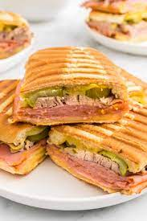

Spicy Cuban Sandwich

Description
A tasty spin on the classic cuban sandwich, with chicken.
Ingredients
- 4 tbls butter
- 1 yellow onion, thinly sliced
- 6 in french baguette, cut in half length wise
- 1 tbls mayonnaise
- 1/2 cup sweet and spicy pickles
- 4 tbls mustard
- 4 slices deli ham
- 4 slices swiss cheese
- 4 thin slices mojo pork
Steps
- Heat a large skillet over medium high heat. When heated, place deli ham in skillet and lightly brown. Remove from skillet.
- Place mojo pork into pan and cook until heaviy browned. Remove from pan.
- Add 2 tbls butter to skillet. When melted and bubbly, place onion into skillet and cook until softed and lighly browned, about 5 minutes.
- Spread 1 tablespoong of mayonnaise and 1 tablespoon of mustard on each half of the baguette. Place alternating layers of swiss cheese, ham, pork, onions, and pickles on bread and closed.
Push down on sandwhich to smash.
- Heat remaining 2 tablespoons of butter in skillet over medium-high heat. Place sandwhich in skillet and cover (helps to melt the cheese). Cook until bread is browned and crispy on both sides, about 2 or 3 minutes per side.
Homepage